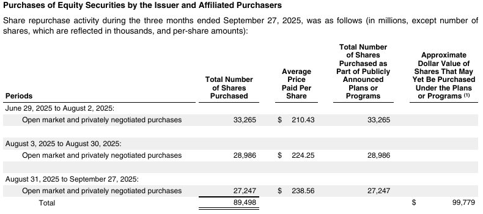

Selecting document parsing and extraction tools
Choose a parsing and extraction configuration that meets the application's quality requirements at the lowest total operating cost. Make that choice against the documents and task the system will actually handle. Public benchmarks provide valuable evidence for selecting candidates; a deployment decision also needs to account for the required outputs, integration, review workload and operating limits.
A financial-reporting team may need every table value attached to the correct period, entity and unit. A legal team may need clause hierarchy, exceptions and cross-references preserved. An engineering team may need relationships in a diagram as well as text. These requirements determine which capabilities to compare and what counts as an acceptable result. The highest overall leaderboard score need not identify the most economical configuration that meets them.
This guide explains how to use existing benchmark evidence and when additional evaluation is justified. The supporting assessment records source revisions, coverage observations and limits. Sources were reviewed on October 19, 2026; this revision uses public documentation and retained results, with no new parser or benchmark execution.
Define the output the application needs
Parsing produces a usable representation of a document: text, reading order, tables, headings, images and, where supported, source coordinates. Structured extraction returns information requested by a schema, such as parties, dates, amounts and repeated records. Some products perform both operations within one service. Others expose an intermediate representation that a separate extractor uses.
The distinction affects evaluation. A parser can preserve two adjacent address blocks while an extractor assigns the wrong party. An extractor may correctly return a requested total even when the intermediate representation contains formatting errors. Inspecting parsing quality helps diagnose either outcome; measuring the requested task establishes whether the configured combination works.
Define success in terms the receiving application can check. An amount may need its currency, unit and effective period. A repeated record may need all its fields associated correctly. A reviewer may need evidence on the original page. An absent value, an unreadable value and a value that does not apply can require different outputs.
| Application requirement | Capability to evaluate | Consequential failure |
|---|---|---|
| Search and quote passages | Text, boundaries and reading order | A quotation joins unrelated columns or omits an exception |
| Reconcile financial schedules | Table structure, units and complete records | Correct numbers are attached to the wrong headers |
| Extract contractual terms | Hierarchy, cross-references and requested fields | An exception or amendment is separated from the term it qualifies |
| Interpret technical documents | Tables, formulas and drawn relationships as required | A label survives while its connection to another element is lost |
| Review extracted facts | Value correctness and source evidence | A plausible answer points to the wrong passage |
These are application requirements to investigate, not claims that public benchmarks omit those capabilities. Establish the relevant deployment constraints too: supported formats, permitted hosting, document size, volume and turnaround. A candidate that cannot satisfy a necessary constraint can leave the shortlist before any quality experiment.
Use public benchmarks for the capabilities they measure
ParseBench, ExtractBench and ExtractBench Pro come from LlamaIndex; OmniDocBench provides another set of parsing references and document conditions. Their tasks and counting units differ.
| Resource | Evaluated task | Useful role in selection |
|---|---|---|
| ParseBench | Recover document content, structure and source regions across five dimensions | Compare parsing capabilities and inspect relevant page conditions |
| ExtractBench | Return schema-guided values, records and evidence from complete documents | Compare requested information extraction, including long-document completeness |
| ExtractBench Pro | Extract values requiring document-specific interpretation, calculation or visual relationships | Stress relevant extraction and reasoning requirements |
| OmniDocBench | Recover text, tables, formulas, layout and reading order across document attributes | Inspect relevant technical, layout and language conditions |
ParseBench assesses several distinct parsing capabilities
ParseBench reports tables, charts, content faithfulness, semantic formatting and visual grounding. Reading order contributes to the content evaluation; heading hierarchy contributes to formatting. They are not additional headline dimensions. An application requiring a navigable table of contents should check the relevant annotations and output contract rather than infer a complete navigation test.
The retained source inventory accounts for 2,078 input paths and 2,553 capability-group cases. Most inputs are individual pages. Those counts are not 2,078 independent complete business documents. The filterable inventory exposes formats, source hashes, groups, challenge tags and observations. The linked assessment distinguishes full mechanical coverage from visual inspection of 221 inputs.
Use the published dimension results to identify suitable configurations. A content average is not the proportion of wholly correct documents. Chart spot checks do not establish reconstruction of every figure or diagram. A combined score assigns weights that may differ from the application's priorities.
ExtractBench assesses requested information and completeness
The pinned ExtractBench documentation reports 370 documents and 4,869 pages across 67 document types, including 325 real documents and 45 synthetic long-list examples. Its schema-guided task, value scoring, record alignment and evidence requirements are closer to a requested information product than to general page-to-Markdown conversion.
Its short, medium and long document slices can help reveal whether an extraction system returns the required records throughout a document. Inspect recall beside precision. A small set of correct returned values can conceal many omissions. Whether its schemas and record definitions match the intended application still requires inspection. These counts and construction details are upstream reports, not an independent reference audit.
ExtractBench Pro extends the interpretation challenge
Pro uses the same evaluation framework with 100 synthetic documents. Its six challenge groups cover document conventions, organization-specific vocabulary, counting rules, drawn relationships, charts within documents and long chart sheets. The dataset card describes fictional values established before rendering. Public evaluation therefore already includes problems that might otherwise appear to justify creating new examples.
The Pro announcement also reports the proportion of documents with perfect value F1 beside aggregate value and grounding scores. Perfect value F1 is a stricter value-completeness measure; it does not by itself require correct citations or satisfy every business acceptance rule. Difficult synthetic examples expose capabilities, but do not estimate their prevalence in a particular organization's incoming documents.
Inspect the method behind the score
These resources publish data and evaluation code, which makes their task contracts inspectable. Their release dates and scope should travel with any comparison. ParseBench launched in April 2026, ExtractBench in August, and Pro in October. Recent availability does not establish independent validation or stable provider rankings.
Check how expected answers were constructed, which cases a score includes, the metric's treatment of missing values and the exact evaluated configuration. Vendor-produced evidence is useful when those details support the intended comparison. Credit it without treating a vendor's headline as an application acceptance test. A same-named local wrapper can expose different options or outputs.
Match the evidence to the document collection
An industry label gives insufficient detail for a selection decision. Financial reports can contain narrative pages, scans, dense schedules and charts. A law firm's work may involve signed agreements, amended clauses or image-only exhibits. An engineering collection may combine manuals, calculations and large drawings. Record which conditions occur, their volume and the cost of getting them wrong.
Compare those conditions with actual public cases and their annotations. Useful matches include structure, capture quality, language, document length, relevant facts and the required representation. Unknown metadata remains unknown. An unrecognized family label in an automatic inventory does not establish that the benchmark lacks the family.
Public results may already support a shortlist. Separately reported slices or retained case results may support a more relevant comparison. When the necessary configuration, schema or delivered representation differs, an additional acceptance check may be justified. Collect new references only for the unresolved requirement. A stricter aggregate over existing annotations can sometimes answer the question without another corpus.
A targeted assessment should distinguish a demonstrated mismatch from an unexamined condition. The available inspection establishes neither a percentage of all business use cases covered nor a general coverage failure. An application can fit public evidence well even though its internal documents are unavailable to benchmark authors.
A worked selection: share-repurchase records with source evidence
Consider a financial-analysis workflow that needs one record per reporting period, with the share count, average price and supporting source location. The example uses an actual Apple filing page retained in ParseBench. The workflow requirements below are illustrative; the page, annotations and saved parser outputs are retained evidence.

The introductory sentence gives different units for different columns. For the first period, the required normalized record would contain:
| Required field | Accepted value for this source example |
|---|---|
| Period | June 29 through August 2, 2025 |
| Shares purchased | 33,265,000 shares, from 33,265 stated in thousands |
| Average price per share | $210.43 |
| Supporting source | This row, its headers and the unit sentence on the same page |
The application must also distinguish the period rows from the total. All three periods must be returned, with no duplicate records or invented price for the total. An output of 33,265 without its scale fails the declared contract even though the printed digits are correct. The source location must support the number and its interpretation.
What the existing benchmark supplies. The public table reference includes 33,265 and the relevant column header. Its expected HTML does not include the unit sentence above the table. Table scoring can therefore inform candidate selection without certifying the normalized share count required here. Content and grounding evidence are relevant too. This example already exists publicly; creating another financial-table corpus is unnecessary to explain the requirement.
Which candidates merit inspection. The pinned published leaderboard gives the following aggregate scores on its evaluated population:
| Published configuration | Tables, score out of 100 | Visual grounding, score out of 100 |
|---|---|---|
| Azure Document Intelligence (Layout) | 86.00 | 73.78 |
| LlamaParse Agentic | 88.88 | 84.25 |
These are two candidates for output-contract verification, selected to illustrate comparison across suppliers. The table is not a complete shortlist or an Apple-page result. The dated source snapshot identifies the exact leaderboard rows. Published aggregates do not establish either candidate's accuracy on this schema or its current configuration's operating cost.
The decision supported now. Keep those two configurations for a check of the required record and source evidence. The retained Markdown-only local integration cannot supply the required coordinate sidecar, so it cannot be deployed unchanged for this workflow. That interface finding does not establish a limitation of every underlying parser SDK.
The remaining acceptance check is specific: obtain all three period records, correctly scaled, with their supporting regions; check the total is handled as declared; then compare complete-workflow cost and review needs on representative reports. That check has not been run. Existing evidence justifies a targeted comparison of the configured candidates, not production approval of either one.
Compare configurations on representative, independent references
When additional evaluation can change the decision, define the eligible population before inspecting candidate outputs. Include important document conditions and ordinary work. Report a production-weighted result separately from a deliberately difficult stress set. Selecting only documents that one candidate handles well biases the comparison. A fixed percentage sample does not, by itself, establish adequate coverage or precision.
Reference answers must describe the actual rendered input. Source data, filing HTML and editable originals can help construct truth, but a different rendition can omit or rearrange information. Resolve ambiguous readings against the page and task definition. Evaluated answers can identify a disagreement for review; they cannot establish their own correctness.
Document normalization and record identity too. Equivalent date formats may be acceptable, while a lost sign or unit changes the result. Identical descriptions can belong to separate legitimate records. Matching only isolated field values can miss incorrect associations between otherwise correct fields.
Compare candidates on the same input bytes and freeze the complete configuration, including parser mode, model version, extractor, schema, prompts and preprocessing. Retain planned attempts, failures, empty outputs and timeouts. An evaluator exception leaves an incomplete evaluation; excluding that case would change the comparison.
Use metrics that distinguish useful partial recovery from operational acceptance:
- Field precision and recall show incorrect and omitted requested values.
- Record metrics show whether associated fields form the correct complete records.
- Document acceptance shows whether every critical requirement passed together.
- Evidence metrics show whether returned facts point to appropriate support.
- Results by document condition reveal failures hidden by a population average.
Keep the parser output, extracted answer and reference available for disagreement review. The result measures a configured combination. Diagnosis determines whether a failure arose in perception, representation, extraction or the reference.
Successful parser calls and complete task acceptance are different
A retained invoice experiment used 100 generated documents from six source template/complexity combinations and a fixed downstream extractor. Both configured parsers returned content on all 100 inputs. A task pass additionally required all five requested fields and every required line record, without missing or extra records under the frozen rules.
| Retained configuration | Calls returning content | Complete-task passes | Matched / expected / predicted records | Record F1 |
|---|---|---|---|---|
| pypdf plus fixed extractor | 100/100 | 84/100 | 668 / 696 / 698 | 95.84% |
| pdfplumber plus fixed extractor | 100/100 | 55/100 | 677 / 696 / 691 | 97.62% |
Record precision is matched records divided by predicted records; recall is matched records divided by expected records. Their harmonic mean, F1, is equivalently 2 × matched / (expected + predicted), summed across these invoices. It gives partial credit for recovered records. Complete-task acceptance fails an invoice with any required field or record error. The different ordering follows from those different acceptance criteria. These are generated-template results for configured combinations, not estimates for arbitrary supplier invoices.
One retained document shows the source of an extraction failure directly:
The pdfplumber output contains this row in its plain-text section. The fixed extractor chose its Markdown-table representation, which contained only nine records. Its saved prediction omitted the continuation item. The pypdf combination returned all ten records on this document. Both combinations recovered the five requested fields. The source, outputs and predictions show the disagreement.
This omission occurred between the retained parser representation and the selected extraction path. Describing it as a parser crash or claiming that the raw output lost the row would misdiagnose the failure. The saved summary and qualification retain the population, reference and extractor limits.
Use paired disagreements to investigate consequential differences. Multiple fields on one page, or repeated pages from one template, supply dependent observations. Do not claim narrow uncertainty merely from a large count of field grades. Separate examples used to tune a configuration from examples used to assess the final choice.
Evaluate confidence as a review policy
Confidence scores can help allocate review effort, but the presence of a score does not establish a safe automation threshold. A reported confidence of 0.95 needs validation before it can be interpreted as 95% correctness in the intended workload. Different providers' scores need not share that interpretation.
LlamaIndex's confidence guidance recommends choosing a cutoff against reference data and checking it on separate representative data. Compare how much work each candidate can accept automatically at the required precision. A threshold that accepts almost nothing may look accurate while saving little review effort.
Measure omissions separately. Confidence attached to returned values cannot flag a required record that was never returned. Field-level confidence also does not establish whole-document correctness. Define whether review applies to one value, a complete record or the entire document, then measure workload at that unit. Track wrong automatic acceptances, incomplete documents and the accuracy of the reviewed final output as well as accepted-value precision.
Choose thresholds and fallback rules using development data; assess the frozen policy on separate documents. Recheck it when document conditions or component versions change. A high-confidence answer with invalid source support still fails a workflow that requires traceability.
Compare the economics of the complete configuration
The relevant cost includes parsing, extraction, retries, manual review and operation. Local inference has hardware and maintenance costs; an API bill can omit review and integration effort. Separate the one-time cost of evaluation and implementation from recurring processing expenditure.
Consider a hypothetical workload of 100,000 documents per month, averaging two pages each. Review takes three minutes per document at an assumed labor cost of $40 per hour, or $2 per reviewed document. Assume all three configurations meet the final quality requirement with their stated review policy.
| Hypothetical configuration | Processing price per page | Documents sent to review | Processing cost | Review cost | Monthly subtotal |
|---|---|---|---|---|---|
| A | $0.01 | 20% | $2,000 | $40,000 | $42,000 |
| B | $0.04 | 5% | $8,000 | $10,000 | $18,000 |
| C | $0.08 | 5% | $16,000 | $10,000 | $26,000 |
These are illustrative assumptions, not measured provider prices or review rates. B has the lowest subtotal despite A's lower processing price. C's higher price buys no review reduction in this example. Additional integration, infrastructure and residual error costs could change the decision. Review effectiveness must be measured rather than assumed in an actual deployment.
The same assumptions give a reusable break-even calculation. B costs $0.06 more per document to process: two pages × ($0.04 - $0.01). Each avoided review saves $2. B therefore breaks even with A when its review rate is three percentage points lower, since $0.06 / $2 = 0.03. A larger review reduction lowers the subtotal; a smaller reduction leaves A cheaper. Substitute the application's processing prices and review cost before using that threshold. It holds only when both configurations meet the quality requirement and other cost differences are absent.
Compare cost at a shared quality requirement. A configuration that fails a critical acceptance criterion cannot be made suitable by a low average cost. Among suitable configurations, account for differences in supported volume, review capacity and operating effort. Avoid paying for accuracy improvements that do not improve the application's accepted output or economics.
Measure latency and throughput under the intended operating conditions
Measure elapsed time from the application's submission to a usable result. Upload, queueing, preprocessing, extraction, validation and retries can all contribute. Report typical and slow completions, failure rates and concurrency. Throughput should describe complete accepted documents over elapsed time, including the unsuccessful work needed to obtain them.
Separate cold startup, initialized-model processing and output-cache replay. Cached model weights on disk do not establish reuse of initialized models. Changing concurrency can alter throughput, memory needs and contention. Declare device, worker limits and competing load before interpreting a local measurement. The technical evidence appendix explains what retained initialization observations establish and which performance costs remain unmeasured.
Common APIs simplify access but preserve evaluation obligations
OpenDocRouter's published SDK exposes model listing and parsing through a common client. Such an interface can reduce integration work when comparing models. It does not establish equivalent quality, preprocessing or service behaviour. Record the selected model and configuration, per-input outcomes and delivered representation. Evaluate any routing or fallback policy as the actual combination the application will use. No parsing or extraction requests were made to OpenDocRouter for this guide.
Record a component decision the implementation can use
A useful selection record names the chosen configuration, the acceptance requirements it meets and the evidence supporting the choice. It identifies unresolved conditions, the review/fallback policy, expected volume and operating costs. Another engineer should be able to distinguish measured results from assumptions and reproduce the declared comparison.
Further experiments need a question whose answer could change that choice. Existing public evidence and a bounded integration check may be sufficient. When candidates disagree on critical cases, inspect those disagreements before expanding the run indiscriminately. When the remaining uncertainty is acceptable for the intended use, document it and proceed to implementation acceptance.
Parsing and extraction feed validation, interpretation, orchestration and downstream business applications. Within Applied AI's workflow automation work, component evaluation supports the larger responsibility of designing, integrating and operating a reliable document intelligence system. A component benchmark informs that design; the complete workflow still needs its own acceptance evidence.